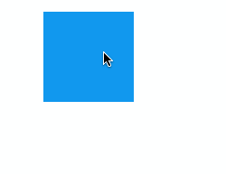

最终效果:

1
2
3
4
5
6
7
8
9
10
11
12
13
14
15
16
17
18
19
20
21
22
23
24
25
26
27
28
29
30
31
32
33
34
35
36
37
38
39
|
useEffect(() => {
// 处理移动之类的
const handleMove = (e) => {
const left = nodePosRef.current.x;
const top = nodePosRef.current.y;
const diffX = e.clientX - startPosRef.current.x;
const diffY = e.clientY - startPosRef.current.y;
const targetNodeX = left + diffX;
const targetNodeY = top + diffY;
setStyle({ x: targetNodeX, y: targetNodeY });
};
const handleUp = () => {
// 移除事件监听
window.removeEventListener("mousemove", handleMove);
window.removeEventListener("mouseup", handleUp);
};
const handleDown = (e) => {
// 初始化的一些操作
startPosRef.current.x = e.clientX;
startPosRef.current.y = e.clientY;
const rect = nodeRef.current.getBoundingClientRect();
nodePosRef.current.x = rect.left;
nodePosRef.current.y = rect.top;
window.addEventListener("mousemove", handleMove);
window.addEventListener("mouseup", handleUp);
};
nodeRef.current.addEventListener("mousedown", handleDown);
return () => {
nodeRef.current.removeEventListener("mousedown", handleDown);
};
}, []);
|
比较优秀的是可以分为mousedown、mousemove和mouseup三个阶段，就可以分开三个阶段处理自己的事情！
2020-03-15 更新：
注意这里的mousemove和mouseup是绑定在 window 上面的，因为如果同样绑在 node 上面会发现移动速度比较快时 node 跟不上，所以稍微提示一下！